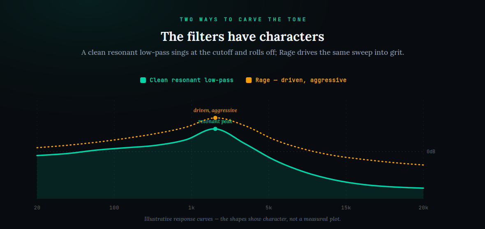
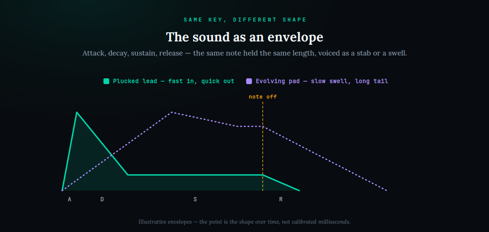
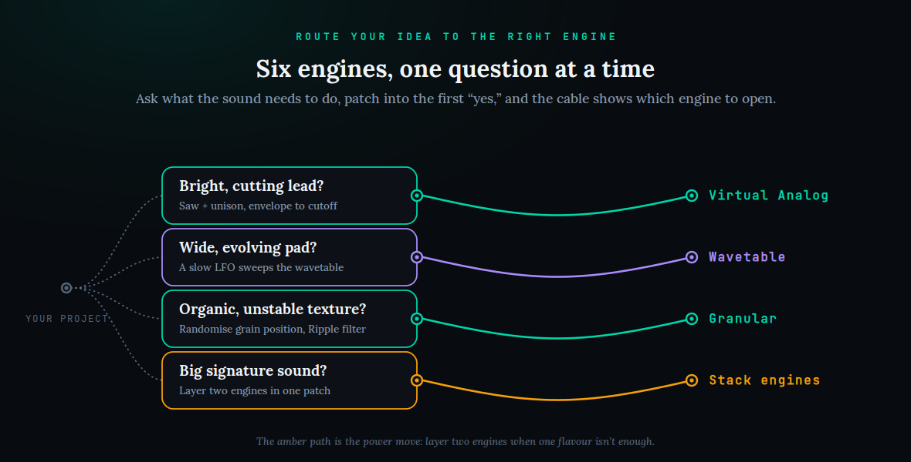

Open Arturia Pigments for the first time and the problem is not that it is confusing — it is that it is generous. There are six sound engines, two filters that can run in series or parallel, a modular rack of effects, a sequencer, an arpeggiator, and a modulation section deep enough to lose an afternoon in. Most tutorials respond to that abundance by giving you a guided tour of all of it, engine by engine, and that is precisely why beginners bounce: you finish the tour having seen everything and learned nothing you can use. This guide does the opposite. It ignores five of the six engines, teaches the one thing that actually makes Pigments Pigments — the color-coded modulation matrix — and then walks you through four real patches you will genuinely reach for: a supersaw lead, an evolving pad, a granular texture, and a hard modern bass. By the end you will not have memorised a feature list. You will have made sounds, and you will understand the routing habit that lets you make any sound the instrument is capable of.
Pigments is not six synths you must master — it is one modulation engine wearing six different oscillators, and the engines are almost interchangeable. Stop staring at the engine menu. Pick one engine (Wavetable or Virtual Analog to start), get a raw tone, then drag color-coded modulation sources — envelopes, LFOs, Functions, random — onto destinations in the matrix, which is the one screen that matters. The current build is Pigments 7 ($199, with famously free major updates for owners); grab the free demo, build in order — lead, pad, texture, bass — and let the routing do the work.
The interface in five regions

Before you touch anything, it helps to see the instrument as five regions rather than a wall of controls, because every patch you will ever build is the same five regions with different settings. Left to right along the top, the signal flows in a path you already know from any subtractive synth — and if the words “oscillator into filter into amplifier” do not yet mean anything to you, read our short primer on sound design basics first, because it is the ground everything here stands on. The first region is the engines: the tone generators. Pigments gives you six — Virtual Analog, Wavetable, Harmonic (additive), Sample, Granular, and Modal — plus a small Utility engine for a sub-oscillator and noise, and you can run more than one engine at once in separate slots and layer them. That sounds like a lot to learn, and it would be if the engines were the instrument. They are not. They are interchangeable oscillators; the routing is the instrument, which is why we will pick one engine and leave the rest alone for now.
The second region is the filters. Pigments has two, and crucially they can be arranged in series (one feeding the next) or in parallel (each getting a copy of the signal), with a blend control between them. Both are multimode, so a single filter can be a lowpass, a highpass, a bandpass, or one of the character models, and Pigments 7 added three deliberately extreme filters — Rage, Ripple, and Reverb — that we will use later for grit and motion. The third region is the FX rack: a modular chain of delays, reverbs, distortions, choruses and more that you drag into whatever order you like, including the new Corroder distortion. The fourth region, easy to miss, is the generative side — the sequencer and arpeggiator that can play and evolve a patch on their own. And the fifth region, the one that changes everything, is the modulation matrix — the layer that reaches up and touches every other region at once, including those two filters above whose character we will put to work later.
Here is the mental shift that makes Pigments click. In most synths the four signal-path regions are the instrument and modulation is a bolt-on. In Pigments it is the reverse: the four signal regions are ordinary, almost generic, and the modulation is where the identity and the value live. Two producers can load the same Wavetable engine and the same filter, and the one who understands the matrix will make a patch that breathes and moves while the other makes a patch that just sits there. That is the entire difference between a Pigments owner who loves the synth and one who quietly goes back to presets. So we are going to spend most of our attention on modulation and almost none on the engine menu — which is exactly backwards from how the synth is usually taught, and exactly why it works.
Pick one engine — and ignore the other five
The single most common way to stall in Pigments is to treat the six engines as six subjects you must study. You do not. For your first month, pick one engine and build everything with it, because the skill that transfers between patches is not engine knowledge — it is routing knowledge, and routing is identical no matter which engine feeds it. My recommendation for a beginner is Wavetable, for two reasons. First, it is the most versatile single engine: a wavetable is a stack of related waveforms, and sweeping through that stack with the Wavetable Position control gives you evolving movement for free, which is the raw material of pads, leads, and basses alike. If the phrase is new, our note on wavetable synthesis explains the idea in a paragraph. Second, Wavetable is the engine that most rewards modulation, which is the habit we are here to build.
If you come from an analog background and want something more immediately familiar, start with Virtual Analog instead — it gives you the classic saw, square, and triangle oscillators with pulse-width and sync, and it behaves exactly like the subtractive synths you already know. Producers arriving from Serum or Vital will feel at home in either Wavetable or Virtual Analog within minutes; the layout differs but the concepts are the same, and much of what you learned there transfers directly. The other four engines are genuinely wonderful and you will get to them — Granular for clouds of texture, Harmonic for additive bell-and-organ tones, Sample for turning any audio into a playable instrument, Modal for physical-modelling plucks and mallets — but they are variations on a theme, not new subjects. We will reach for Granular once, deliberately, in Build 3, precisely so you can feel how little changes when the engine does.
The practical move on day one is smaller than it sounds: load an Init patch or a bare-bones preset, choose Wavetable in the first engine slot, and play. Do not add a second engine yet. Do not open the FX rack. Get one clean tone out of one engine, adjust the Wavetable Position knob so you can hear the table morph, and stop there. That is a complete, if plain, patch. Everything from here is about making that plain tone move — and everything that makes it move lives in the matrix. Resisting the urge to layer a second engine or stack effects before you can route a single modulation source is the discipline that separates people who learn Pigments from people who own it and use presets.
The modulation matrix, properly

Now the core lesson, the thing that, once it clicks, makes the whole synth open up. Modulation is the act of one control automatically moving another: an LFO wobbling the filter, an envelope sweeping the pitch, a random source nudging the wavetable position a hair on every note so no two notes are identical. Pigments makes this the easiest of any synth on the market through two design choices, and both are worth naming because they are why people fall for this instrument. The first is color: every modulation source has its own color, and that color follows it everywhere. When you assign an LFO to a knob, the knob grows a colored ring in that LFO’s color; glance at any control and its rings tell you, instantly, what is moving it and by how much. The second is drag-and-drop: to modulate a parameter you literally grab a source and drop it onto the knob, then drag the colored ring outward to set depth. There is no menu, no assignment dialog, no right-click gymnastics. You point at what you want to move and you move it.
Depth in Pigments is bipolar, and this is the detail beginners miss that changes everything. A modulation amount can be positive or negative. Route an envelope to filter cutoff with positive depth and the filter opens as the note begins; route the same envelope with negative depth and it closes instead. That sign is a creative decision, not a formality — the same envelope, flipped, is the difference between a bright pluck that decays dark and a muffled swell that blooms open. The diagram above shows the shape half of this: the same note held two ways, a fast pluck and a slow swell, the kind of movement an envelope draws and the matrix delivers — and routed with a positive or negative sign, each becomes two sounds. And a single source can drive many destinations at once, each with its own amount and sign: one LFO can push cutoff up while it pushes wavetable position down, so the sound gets brighter and thinner together in a way you could never dial by hand.
The screen that makes all of this legible is the matrix tab. Every drag-and-drop assignment you make also appears as a row in the matrix — source on one axis, destination on the other, depth as a value you can type or slide. Two habits will save you hours. First, when a patch is doing something you did not ask for, open the matrix and read it top to bottom; the culprit is always a route you forgot you made, and the matrix is the one place that shows every route at once. Second, build routes one at a time and listen after each, because modulation compounds — an LFO on cutoff plus an envelope on cutoff plus keytracking on cutoff interact, and if you add all three blind you will not know which one is misbehaving. Treat the matrix like a wiring diagram you keep tidy, not a scratchpad, and Pigments stays controllable no matter how deep the patch gets. This one screen is the reason a Pigments patch can sound alive where the same notes on a simpler synth sound flat, and it is the single skill this entire guide exists to teach.
Envelopes, LFOs, Functions, random: which source, when
The matrix routes sources to destinations, so the last thing to learn before building is which source to reach for. Pigments gives you several families, and choosing the right one is most of what makes a patch feel intentional rather than noisy. An envelope is a one-shot shape triggered by each note — the classic attack, decay, sustain, release — and it is your tool whenever you want something to happen in time with the note: a filter that opens on attack and closes on release, a pitch that dips at the start of a bass, a volume that plucks and decays. Pigments 7 sharpened the amplitude envelope with smoother S-shaped attack and release curves, which is why basses and club-focused sounds hit cleaner and with fewer clicks than in older versions. If a modulation should follow the rhythm of playing, it is almost always an envelope.
An LFO is a repeating cycle — a wave that runs on its own, free or synced to the tempo — and it is your tool for ongoing motion that does not care about note timing: a slow sweep that makes a pad breathe, a fast vibrato on a lead, a tempo-synced pulse that gives a bass its groove. The key control is rate, and the key decision is sync: a free-running LFO drifts and feels organic, a tempo-synced LFO locks to the grid and feels tight. Functions are Pigments’ secret weapon and the source most producers underuse. A Function is a fully custom, drawable shape — you draw the curve with as many stages as you like and it plays back like an envelope or loops like an LFO. When a stock ADSR cannot make the exact movement you hear in your head, a Function can, which is why evolving pads and complex basslines lean on them so heavily. If your other synths have left you frustrated that the modulation shapes never quite match your intention, Functions are the reason to be in Pigments.
Finally there is randomness — the Random and Turing sources — and a little of it is the cheapest way to make a synth sound human. Route a small amount of random to wavetable position, or to filter cutoff, or to the pitch of each note, and no two notes come out identical; the patch stops sounding like a machine repeating itself. The Turing source is a stepped, semi-repeating random that is superb for generative sequences that vary without ever fully losing their shape. There are also performance sources — velocity, mod wheel, aftertouch, keytracking — that let your playing become modulation, and Macros, which we cover with Play View later, that bundle several routes under one knob. The rule of thumb: envelope for note-timed events, LFO for steady motion, Function for custom shapes, random for life, performance sources for expression. Learn to reach for the right one and your patches stop fighting you.
Four real patches, one habit

Now we put the matrix to work. What follows are four complete patches, each written as a reproducible recipe you can follow step by step, and each chosen to teach a different modulation idea. Watch for the pattern the diagram above lays out: every one of these is fundamentally one engine plus one or two well-chosen routes. That is the whole trick. You are not learning four unrelated procedures; you are practising the same habit — pick an engine, get a tone, route modulation, listen — four times, so that by the fourth it is automatic and you can build anything.
Build 1: a supersaw / EDM lead
The supersaw is the big, wide, detuned lead sound at the front of festival records, and it teaches unison and an envelope-to-filter route — the two most-used moves in electronic music. Start with the Virtual Analog engine and a sawtooth wave; the saw’s rich harmonics are what give the sound its brightness. Now turn to unison: raise the voice count so the engine stacks several copies of the oscillator per note, then add a small amount of detune so those copies drift apart in pitch. That drift — and only that drift — is the entire supersaw effect. Spread the voices wide in stereo and the lead fills the mix from left to right. Keep the detune modest: a little reads as huge and lush, a lot reads as seasick and out of tune.
Now the modulation that turns a static stack into a lead. Route an envelope to filter cutoff with a positive depth: start with the filter fairly closed, and let the envelope open it on each note so the sound blooms bright as you play. A short-to-medium attack gives you that classic pluck-into-brightness; a slower attack gives a swelling, trance-style lead. Add a touch of LFO to pitch for a subtle vibrato if you want expression, and route the mod wheel to that LFO’s depth so you can add vibrato with your hand rather than baking it in. Finish in the FX rack with a little reverb and a stereo-widening chorus. This exact recipe — saw, unison, detune, envelope-to-filter — is the backbone of countless tracks; if you are building for the dancefloor, our guide to the best plugins for EDM shows where a lead like this sits in a full arrangement, and future bass in particular lives on exactly this kind of expressive, modulated lead.
Build 2: an evolving pad
A pad is the sustained, atmospheric bed underneath a track, and a great pad is never static — it moves slowly and endlessly so the ear never tires of it. This build teaches the source that makes movement possible: slow modulation onto wavetable position. Switch to the Wavetable engine and choose a lush, harmonically rich table. Play a chord and hold it: right now it sits there, pleasant but dead. The job is to make it breathe. Route a slow LFO to the Wavetable Position with a gentle depth, so the oscillator drifts through the stack of waveforms over several seconds and the timbre shifts continuously. Keep the LFO free-running rather than tempo-synced; you want organic drift, not a pulse.
Then layer a second, different motion so the pad never repeats predictably. Draw a Function — a long, custom curve — and route it to the filter cutoff so the brightness swells and recedes on its own timeline, offset from the wavetable drift. Because the two sources have different shapes and speeds, they combine into movement that never quite loops, which is exactly what a beautiful pad needs. Add a slow amplitude envelope with a long attack and long release so chords fade in and out gently, and finish with a big reverb and perhaps a slow chorus in the FX rack. For ambient and cinematic work this technique is the whole game — our guides to making ambient music and cinematic sound design lean on exactly this kind of slow, layered modulation, and once you can build one moving pad you can build a hundred.
Build 3: a granular texture
This is the build where we deliberately change the engine — so you can feel how little else changes. Switch to the Granular engine, which takes a sample and shatters it into tiny overlapping grains it can stretch, freeze, and rearrange into evolving clouds of sound. Load a sample — a vocal, a field recording, a pad, anything with texture — and already, untouched, it sounds otherworldly. The core granular controls are grain size, position, and density, and the fastest way to understand them is to sweep each one slowly while a note holds and listen to what it does. If the concept is new, our short note on granular synthesis lays out the idea; but you do not need theory to use it, you need your ears and one modulation habit.
And here is the habit, identical to the last two builds: route modulation onto the granular controls. A little random source on grain position keeps the cloud shifting so it never sounds like a loop; a slow LFO or Function on grain size makes the texture swell from fine mist to coarse rattle and back. This is where the new Pigments 7 filters earn their place — drop the Ripple filter after the engine and its ringing, phase-shifting character adds motion and formant-like vowels to the grains, turning a texture into something that feels alive. Add reverb, and you have a cinematic bed or a transition riser that would take a rack of hardware to reproduce. Notice what just happened: you changed the engine completely, but the workflow — get a tone, route modulation, listen — did not change at all. That is the point of the whole guide, proven in one patch.
Build 4: a hard modern bass
The last build is a hard, aggressive bass — the kind that anchors modern electronic and hip-hop productions — and it teaches distortion routing and a tight envelope. Go back to the Wavetable engine (or Virtual Analog for a purer tone) and start with a dark, low table. Add the Utility engine’s sub-oscillator underneath for weight; a great bass is usually a clean sub plus a characterful mid-range layer on top, and keeping those as two clear layers stops the low end turning to mud. Now the character: this is where the new Corroder distortion earns its keep. Corroder is a frequency-selective grit effect — you can crush and distort only the upper part of the sound while leaving the sub clean and powerful underneath, which is exactly what a modern bass needs. Drop it into the FX rack and dial grit into the mids only.
For the movement, keep it tight and rhythmic. Route a fast envelope to filter cutoff with a short decay so each note plucks bright and instantly clamps down — that snap is what makes a bass feel punchy rather than droning. The sharper S-curve envelopes in Pigments 7 make this hit noticeably cleaner than older versions. For a talking, growling bass, route an LFO or Function to the wavetable position in a tempo-synced rhythm so the timbre chews in time with the beat; the Ripple filter from the last build works here too for vowel-like “wub” motion. Keep the sub clean, keep the grit up top, keep the envelope tight, and you have a bass that sits in a mix with authority. If you want to compare how other synths approach this, our head-to-heads on Serum 2 vs Pigments and Vital vs Pigments break down where each tool pulls ahead for bass design specifically — but the routing habit you just used transfers to all of them.
Play View, macros, and making patches playable
Everything so far has been about building sounds. Play View, redesigned and made audio-reactive in Pigments 7, is about playing them — and for a beginner it is also the gentlest on-ramp into the synth. Play View is a simplified performance page that surfaces a handful of the most important controls, with animations that react to the sound so you can see a patch’s character at a glance instead of hunting through deep menus. When you are learning, spending time in Play View rather than the full editor lowers the intimidation dramatically: you tweak the four or five things that matter and hear the result immediately, which is exactly the confidence-building loop a new user needs.
The controls Play View exposes are usually Macros — and Macros are the feature that makes your patches genuinely playable and worth saving. A Macro is a single knob that you route, through the matrix, to several destinations at once. Assign one Macro to open the filter, add detune, and increase reverb together, and now one knob takes the sound from small and dry to huge and wet in a single gesture. This is how professional patches feel expressive under your fingers: the sound designer has hidden a dozen routes behind four labelled knobs, so a player who never opens the editor can still transform the sound. Building your patches with Macros in mind — deciding early which four knobs should control the character — is the difference between a preset that does one thing and one that becomes an instrument. If you tend to build big stacked sounds, our guide to layering synths pairs naturally with Macro thinking, because a Macro is often the cleanest way to move several layers at once.
CPU, presets, and building your own library
A few practical notes keep Pigments fast and organised. On CPU: Pigments 7 is meaningfully lighter than earlier versions — Arturia cites roughly a fifteen-to-twenty percent reduction on heavy patches — but a deep patch with two engines, high unison, granular density, and a full FX rack can still add up. If you feel your project straining, the usual moves apply: keep unison voice counts to what a patch actually needs, watch granular grain density, and once a part is finished, freeze or bounce it to audio so the synth is no longer computing it in real time. Building a few of your own simple init patches also helps, because you spend less time auditioning heavy factory presets and more time on parts already committed.
On presets: Pigments ships with over seventeen hundred of them, and they are not just sounds to use — they are the best free lesson available. When a preset does something you want to understand, do not just play it: open the matrix and read how it is wired, and you will learn more about modulation in ten minutes of reverse-engineering than in an hour of reading. Tag and save your own patches as you make them, with meaningful names and, in Pigments 7, writable tags for BPM, key, and genre, so your library becomes searchable rather than a heap. And do not overlook the in-app sound-design tutorials Arturia added in version 7: they walk you through building specific sounds while highlighting the exact controls and matrix routes involved, which reinforces precisely the habit this guide is built around. If you have not bought in yet, the free time-limited demo is the right way to start, and our full Arturia Pigments review covers whether the $199 price and the free-updates-forever promise are worth it for your workflow — and where Pigments sits against Massive X and the rest of the field.
Build the Sound: 3 Drills
Reading about modulation is not the same as internalising it. These three drills build the routing habit from the ground up — do them in order, and do not skip the beginner one even if it looks trivial, because it is the muscle everything else is built on.
- Load an init patch, choose the Wavetable engine, and play a held note so you have one plain tone.
- Drag an LFO onto the filter cutoff and pull the colored ring out to a medium depth. Listen to the wobble.
- Set the LFO depth to a strong positive value, then flip it to the same negative value. Notice the movement inverts — this is bipolar depth, and it is the most important detail in the whole synth.
- Open the matrix tab and find your route in the list. Confirm the source, destination, and depth match what you did by ear. That round trip — hear it, then read it — is the habit.
- Hold a chord on a rich wavetable. It should sound static — that is the starting point.
- Route a slow, free-running LFO to the Wavetable Position at a gentle depth so the timbre drifts.
- Draw a Function — a long custom curve — and route it to filter cutoff at a different speed, so the two motions never line up.
- Add a long-attack, long-release amplitude envelope and a reverb. Hold the chord for thirty seconds and confirm it never sounds like it is repeating. Two differently-shaped sources is the recipe for movement that does not loop.
- Take your breathing pad from the intermediate drill.
- Assign a single Macro, through the matrix, to three destinations at once: filter cutoff, reverb mix, and a touch of detune or unison.
- Set each route’s depth and sign so that turning the Macro up takes the sound from small, dark and dry to huge, bright and wide — a single gesture doing the work of three knobs.
- Save the patch with the Macro labelled, then play it entirely from Play View without opening the editor. If one knob transforms the sound convincingly, you have built an instrument, not just a preset — and you understand the matrix.
Frequently Asked Questions
Yes, more than its reputation suggests. The six engines make it look intimidating, but you only need one to start, and Pigments 7’s redesigned Play View gives beginners a simplified, audio-reactive page that surfaces the few controls that matter. Learn the drag-and-drop modulation matrix — the one skill this guide teaches — and Pigments is arguably the friendliest deep synth on the market, because it shows you what is moving what in plain color instead of hiding it.
It is the screen that shows every active modulation route at once — which source (an LFO, envelope, Function, or random) is moving which destination (a knob), and by how much. You create routes by dragging a color-coded source onto a control, and depth is bipolar, so a route can push a parameter up or down. The matrix is the identity of the synth: the engines generate tone, but the matrix is what makes a patch move and breathe, and reading it is the core skill.
Six sound engines — Virtual Analog, Wavetable, Harmonic (additive), Sample, Granular, and Modal — plus a Utility engine for a sub-oscillator and noise, and you can layer more than one at a time. Start with Wavetable for the most versatile single engine, or Virtual Analog if you come from classic analog-style synths. Ignore the other four at first; the routing skill you build on one engine transfers to all of them, so there is no need to learn them in parallel.
Pigments 7 (released December 2025) adds a redesigned, audio-reactive Play View; three new filters called Rage, Ripple, and Reverb; a new Corroder distortion effect; snappier S-shaped amplitude envelopes; FM modulation on the Classic Filter; and roughly a fifteen-to-twenty percent CPU reduction on heavy patches, along with fresh presets, wavetables, samples, and in-app sound-design tutorials. As always with Pigments, it was a free update for existing owners.
So far, yes — and it is genuinely unusual. Since the first version, every major update, including the jump to Pigments 7, has been free to existing owners. That stands out sharply against synths moving toward subscriptions, and it is a large part of why Pigments has such a loyal following: you buy it once and keep receiving new engines, filters, and effects at no extra cost. Pricing and policies can change, so confirm the current terms on Arturia’s site before buying.
Pigments 7 is $199 at full price; Arturia typically runs a limited intro discount around each new version’s launch, so check the current price on their store. There is a free, time-limited demo that gives you the full instrument to learn on before you commit, which is the best no-cost way to work through this guide. Prices move, so treat any figure here as a starting point and confirm live.
Use the Wavetable engine with a rich table, then create movement with two differently-shaped modulation sources: a slow free-running LFO on the Wavetable Position for drifting timbre, and a drawn Function on filter cutoff at a different speed so the two motions never line up. Add a long-attack, long-release amplitude envelope and a big reverb. The trick to a pad that never tires the ear is two slow sources moving at different rates so the sound never quite repeats.
They overlap heavily and any of them can make most sounds, so it is less “better” than “different.” Pigments stands out for its six engines under one roof, its exceptionally readable color-coded modulation, and its free-updates history; Serum is a wavetable-first industry standard, and Vital is free and remarkably capable. If you already own and know one, the routing habit transfers. Our detailed comparisons of Serum 2 vs Pigments and Vital vs Pigments break down exactly where each pulls ahead.